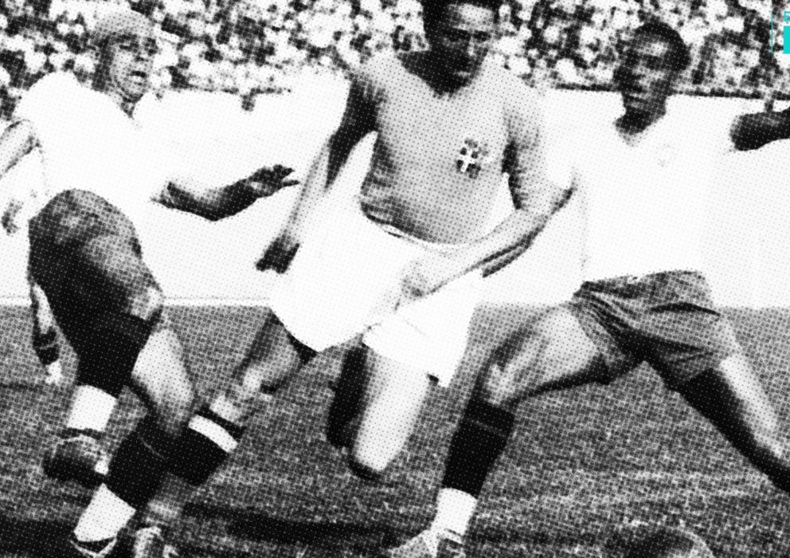

3.ª edición
Último antes de la 2.ª Guerra Mundial
Copa Mundial de la FIFA Francia 1938
4 – 19 de junio de 1938
País sede: Francia 🇫🇷
15 selecciones
18 partidos
Datos generales del torneo
- País sede: Francia 🇫🇷
- Ciudades sede: París, Marsella, Toulouse, Reims, Estrasburgo, Burdeos, Lille
- Estadios: 10
- Selecciones participantes: 15
- Partidos jugados: 18
- Goles anotados: 84
- Campeón: Italia 🇮🇹
- Subcampeón: Hungría 🇭🇺
- Tercer lugar: Brasil 🇧🇷
- Cuarto lugar: Suecia 🇸🇪
- Máximo goleador: Leônidas da Silva (Brasil, 7 goles)
Momentos destacados
Francia 1938 fue el último Mundial antes del estallido de la Segunda Guerra Mundial. Italia logró el bicampeonato,
y Brasil mostró al mundo al brillante Leônidas, el “Diamante Negro”.

Resumen del torneo
-
Italia revalidó su título mundial, convirtiéndose en la primera selección bicampeona de la historia.
-
Brasil sorprendió con un equipo ofensivo y el talento de Leônidas, aunque cayó ante Italia en semifinales.
-
La política influyó: Austria se retiró tras la anexión alemana, y algunos jugadores austríacos fueron invitados a jugar con Alemania.
-
Fue el último Mundial antes de un largo parón de 12 años causado por la Segunda Guerra Mundial.
Fase final
Semifinales
- 🇮🇹 Italia 2–1 Brasil 🇧🇷
- 🇭🇺 Hungría 5–1 Suecia 🇸🇪
Final
Italia campeón del mundo
Equipos participantes
Participantes
- 🇫🇷 Francia
- 🇧🇷 Brasil
- 🇮🇹 Italia
- 🇩🇪 Alemania
- 🇭🇺 Hungría
- 🇨🇱 Chile
- 🇨🇺 Cuba
- 🇵🇱 Polonia
- 🇳🇱 Países Bajos
- 🇸🇪 Suecia
- 🇨🇭 Suiza
- 🇷🇴 Rumania
- 🇧🇪 Bélgica
- 🇭🇺 Noruega
- 🇸🇰 Checoslovaquia
Final: Italia vs Hungría
Italia derrotó 4–2 a Hungría en París, confirmando su hegemonía en el fútbol mundial previo a la guerra.
Gino Colaussi y Silvio Piola fueron las figuras del encuentro.
Italia 🇮🇹 – Alineación
- DT: Vittorio Pozzo
- Olímpio Ceresoli (POR)
- Pietro Rava
- Ernesto Foni
- Michele Andreolo
- Ugo Locatelli
- Pietro Serantoni
- Giovanni Ferrari
- Gino Colaussi
- Silvio Piola
- Giuseppe Meazza (C)
- Virginio Rosetta
Hungría 🇭🇺 – Alineación
- DT: Károly Dietz
- Antal Szabó (POR)
- Gyula Polgár
- Gyula Lázár
- László Sárosi
- György Sárosi (C)
- Ferenc Sas
- János Pálinkás
- József Zsengellér
- Géza Toldi
- Gyula Titkos
Reseña general
El Mundial de Francia 1938 fue el último antes de la Segunda Guerra Mundial.
El clima político influía en todo: Austria desapareció como selección, Alemania jugó con futbolistas austríacos, y varios países se retiraron.
Italia consolidó su dominio con su segundo título consecutivo, mientras Brasil mostró al mundo
un estilo ofensivo que sería la semilla del “jogo bonito”.